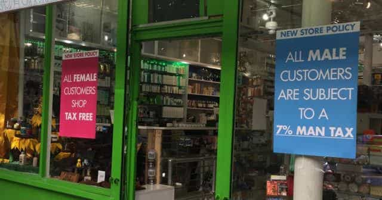

Corey is an iconoclast and the author of 'Man's Fight for Existence'. He believes that the key to life is for men to honour their primal nature. Visit his new website at primalexistence.com


Around 2013 when I first discovered the manosphere, I knew things were bad in our society in terms of sex relations along with the corroding effects of feminism. But at the time, I didn’t appreciate just know how bad. In just few years since then, I’ve seen enough madness to know which direction we’re headed and it doesn’t look good. We already live in a feminist society and the harpies are pushing to make things even harder for ordinary men who just want to get on with their lives. The following will demonstrate what will happen to our society if we were to give into all the demented demands of today’s feminists.
Although this article is meant to highlight the craziness of it all, note that many of these concepts are already starting to take shape in our societies to become a reality.
“You can’t save Mary Jane anymore, Spiderman. It’s ‘benevolent sexism’, and therefore, a misogynistic hate-crime.”
In England, trying to pick-up a woman or even just whistling at her is considered a “hate crime” if the woman gets upset by it. It is a real possibility that this law might spread to the rest of the West and expand to include other misogynist offenses including: looking at a woman (what feminists call “stare rape”), calling a trans-woman a he (there’s already a similar law in New York), arguing with women online, manspreading, mansplaining, helping a woman, and so on.
Since women get to dictate the terms of all sexual interactions, consent forms will have to become a necessity in the future. And not just for sex, but in all forms of interaction like being able to approach a woman on the street. Maybe an app will be developed where a woman could consent to sex, conversation, or being looked at so that she could screen out all the low-life misogynists who want to compliment her for her looks.
All men are rapists; we need to believe her because she’s a woman. It’s a perfect circular logic.
Feminists claim that the reason we live in a patriarchal rape culture is because our society discourages rape victims (always women) from coming forward and also because their words are not taken seriously. So, what they’re proposing is clear: rape accusations should be done anonymously and the “victims” should always be believed against evidences that are biased because… patriarchy.
Men have already lost their jobs, kicked out of school, jailed, and even murdered for false rape accusations while their accusers faced no legal consequences (and got to keep their anonymity). So, we’re not really that far from reaching that level.
This book is not a mandatory reading in kindergartens yet. What more proof do you need that we are all oppressed by the patriarchy?
With feminism taking over the educational institutions and already working to reprogram men to serve the system, it won’t be long before men who have been found guilty of misogynist hate crimes to end up in re-education camps. We already have sensitivity training in jobs while colleges are adding courses on toxic masculinity to re-define what it is to be a man on feminist terms. It probably won’t be long before “toxic masculinity” is added to DSM as a mental disorder (in place of homosexuality) and treated like a disease in mental health institutions.
Canada already has an actual social justice tribunal.
Since it’ll be difficult to charge men of bogus hate crimes against women with nothing more than a woman’s feelings as a proof, the government may introduce tribunals similar to the kangaroo courts in universities and HR departments at workplaces, all in the name of creating a harmonious society free of hate. Those who enter these tribunals will also be destroyed by the media and have no chance of being employed and be subject to permanent social ostracism even if they’re found not guilty.
As I’ve mentioned in my other article, docile and compliant dogs are the ideal that feminists aim for in their efforts to domesticate men. A significant number of boys are already on ADHD medication to have their behaviors controlled while male sex offenders are given chemical castration. If all men are violent hooligans and rapists as some feminists claim, then the next logical step is to let the government control men’s testosterone levels to an “acceptable” level. Note that we already have many parents who are letting their children take hormones to alter their “gender.” This practice will likely become more common in the future.
“She did not consent; I must not touch.”
Feminists have been so effective in terrorizing the beta males that many of them are afraid to interact with women in any shape or form. Consider that we already live in a world where walking past some deranged woman will get you accused of sexual assault. In the future, all physical contact with women may become sternly discouraged or even forbidden that more men will retreat to porn and sexbots as alternatives. Haptic technology for sex is already being developed to pave the way for a culture of non-contact sex.

Did you think you pesky “MRA’s” could escape the gynocentric order by refusing marriage and going your own way? With the drop in number of men who are manning up that coincides with the rising number of single mothers who need to leech the welfare state, it’s not too unreasonable to expect a push for bachelor tax that will penalize men who refuse to put a ring on an aging, post-slut sow.
Knowing that it will cause a major backlash, the bachelor tax will probably not come into being in an obvious way. Instead, it will be introduced under the guise of supporting the poor single mothers and helping to foster families. Heck, considering how men are the primary tax payers while women are the primary beneficiaries of the welfare state, you could say that we already have a gynocentric taxation system in all but name.
Women already practice ‘Alpha fucks, Beta bucks’ strategy. So why shouldn’t an empowered woman be allowed to do it openly without shame?
With the institution of marriage already destroyed and with many men already accepting cuckoldery as the norm in the form of “open marriage,” women may as well be allowed to have multiple husbands. And why not? We already know that there are far too many men for the number of women in our society and that those lazy men should do more to support women. Is it that crazy to have one husband for sex and another three for money? I’m sure many desperate simps will have no issue sharing a wife with several other men as long as they get some cuddling action when she’s not too busy banging her more attractive husbands. The implementation of bachelor tax, mentioned above, will also make marriage more desirable.
The final solution to the testosterone problem.
If the above measures to protect women and ensure equality are implemented, it’s likely that all the misogynists will grumble in anger and resist them. If that is the case, it might be best to take the advice of the feminist, Julie Bindel, and place all men in concentration camps. No man, no problem! If you’re wondering how feminists could even achieve this, know that there is already an army of goons called the police who will gladly do as they’re told to maintain the gynocentric order.
As I’ve said in an older article of mine, feminism is practically a terrorist movement that demands more and more political, social, and cultural oppression of men for the sake of radical women who play the eternal victim and cry for never-ending privileges. While you may think that the above nightmare scenarios are over-the-top and unlikely to happen, I bet those who lived just few generations ago couldn’t have imagined what we’re witnessing today either. Feminism, by colluding with the government, will continue to grow like a tumor and it will not stop until you make it stop.
Remember that if we don’t fight back, no one else will.
Read More: The Reality Of False Rape Accusations Will Require You To Make A Change You May Not Like